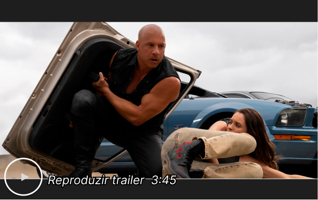
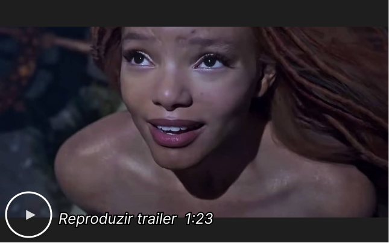

-

Direção: Vin Diesel
Roteiro: Justin Lin, Dan Mazeau
Título Original: Fast X
Nota geral: 8,7

Comentário em destaque:
 Anônimo 27/05/2023
Anônimo 27/05/2023 
As irredeemably silly as it is satisfyingly self-aware, Fast X should rev the engines of longtime fans while leaving many newcomers in neutral.
-

Direção: Rob Marshall
Roteiro: David Magee
Título Original: The Little Mermaid
Nota geral: 7,4
Comentário em destaque:
 João Carlos 03/05/2023
João Carlos 03/05/2023
With Halle Bailey making a major splash in the title role, Disney's live-action Little Mermaid ranks among the studio's most enjoyable reimaginings.